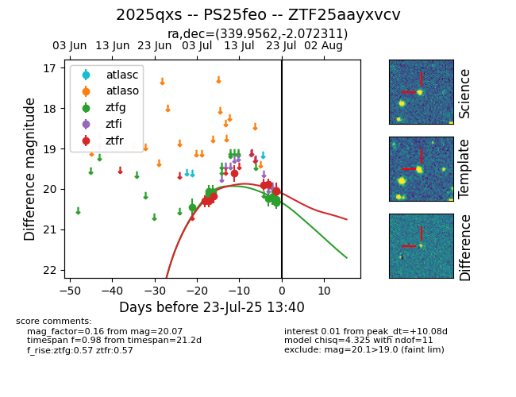

Target ZTF25aayxvcv at 2025-07-23 13:40, see:
FINK: fink-portal.org/ZTF25aayxvcv
Lasair: lasair-ztf.lsst.ac.uk/objects/ZTF25aayxvcv
ALeRCE: alerce.online/object/ZTF25aayxvcv
TNS: wis-tns.org/object/2025qxs
YSE: ziggy.ucolick.org/yse/transient_detail/2025qxs
alt names
ZTF25aayxvcv (ztf,fink)
2025qxs (tns,yse)
PS25feo (panstarrs)
coordinates:
equatorial (ra, dec) = (339.9562,-2.07231)
galactic (l, b) = (65.7730,-49.74923)
photometry
last ztfg=20.25, ztfr=20.07
8 ztfg, 8 ztfr detections
